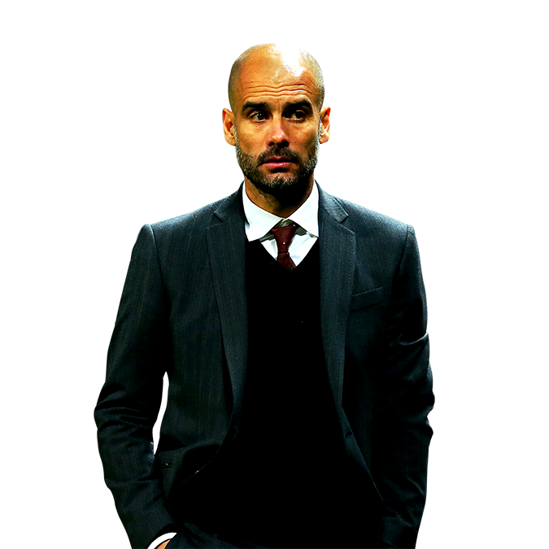

| Home | Stadium & Outfits | Trophies | Players | Contacts |
|---|
Il Foot-Ball Club Barcelona fu fondato il 29 novembre 1899 da un gruppo di calciatori guidati da Joan Gamper.  Nei primi anni il club giocò gran parte delle partite in Svizzera e Inghilterra.A partire dal 1910 il Barcellona visse il primo periodo di successo: guidato da giocatori come Ricardo Zamora, Josep Samitier e Paulino Alcántara vinse dieci Coppe di Spagna e dominò nel campionato catalano e nel primo campionato spagnolo.
Allo scoppio della guerra civile spagnola Franco cambiò il nome del Barcellona in Club de Fútbol Barcelona; in quel periodo arrivarono altri quattro titoli di Liga e una Coppa del Re, ma nel 1942 il club catalano, piazzandosi 12º a fine stagione, rischiò la retrocessione in Segunda División che riuscì a evitare solo dopo aver battuto per 5-1 il Real Murcia (club 3º classificato nel gruppo promozione finale di Segunda División) nello spareggio promozione-retrocessione.Negli anni 1950, il Barcellona ebbe di nuovo grandi successi: sotto la guida di Ferdinand Daučík e Helenio Herrera, con giocatori come Ladislao Kubala e Luis Suárez Miramontes il Barça instaurò una dittatura sportiva in patria per quattro campionati e cinque Coppe del Re, e in Europa con i primi tre successi europei nella Coppa delle Fiere, e le sconfitte nella prime finali della Coppa dei Campioni e della Coppa delle Coppe. L'avvento di Rinus Michels, Johan Cruijff e Johan Neeskens negli anni 1970 portò con sé nuovi successi, che si conclusero con la vittoria in campionato nel 1973-1974 e una Coppa delle Coppe. Gli anni 1980 andarono a fasi alterne: il Barça vinse un solo campionato e una Coppa delle Coppe e perse la finale della Coppa dei Campioni, ma quando Johan Cruyff, nel 1988, tornò sulla panchina del club, iniziò il periodo di maggior successo nella storia del club. Guidato da Cruyff, il cosiddetto Dream Team composto da stelle come Hristo Stoičkov e Romário vinse quattro campionati, una Coppa delle Coppe e la prima Coppa dei Campioni nella storia del club. Il successo degli anni 1990 continuò con Bobby Robson e Louis Van Gaal e campioni come Ronaldo, Luís Figo e Rivaldo che guidarono i blaugrana alla vittoria nel 1997-1998 e nel 1998-1999.
Nei primi anni il club giocò gran parte delle partite in Svizzera e Inghilterra.A partire dal 1910 il Barcellona visse il primo periodo di successo: guidato da giocatori come Ricardo Zamora, Josep Samitier e Paulino Alcántara vinse dieci Coppe di Spagna e dominò nel campionato catalano e nel primo campionato spagnolo.
Allo scoppio della guerra civile spagnola Franco cambiò il nome del Barcellona in Club de Fútbol Barcelona; in quel periodo arrivarono altri quattro titoli di Liga e una Coppa del Re, ma nel 1942 il club catalano, piazzandosi 12º a fine stagione, rischiò la retrocessione in Segunda División che riuscì a evitare solo dopo aver battuto per 5-1 il Real Murcia (club 3º classificato nel gruppo promozione finale di Segunda División) nello spareggio promozione-retrocessione.Negli anni 1950, il Barcellona ebbe di nuovo grandi successi: sotto la guida di Ferdinand Daučík e Helenio Herrera, con giocatori come Ladislao Kubala e Luis Suárez Miramontes il Barça instaurò una dittatura sportiva in patria per quattro campionati e cinque Coppe del Re, e in Europa con i primi tre successi europei nella Coppa delle Fiere, e le sconfitte nella prime finali della Coppa dei Campioni e della Coppa delle Coppe. L'avvento di Rinus Michels, Johan Cruijff e Johan Neeskens negli anni 1970 portò con sé nuovi successi, che si conclusero con la vittoria in campionato nel 1973-1974 e una Coppa delle Coppe. Gli anni 1980 andarono a fasi alterne: il Barça vinse un solo campionato e una Coppa delle Coppe e perse la finale della Coppa dei Campioni, ma quando Johan Cruyff, nel 1988, tornò sulla panchina del club, iniziò il periodo di maggior successo nella storia del club. Guidato da Cruyff, il cosiddetto Dream Team composto da stelle come Hristo Stoičkov e Romário vinse quattro campionati, una Coppa delle Coppe e la prima Coppa dei Campioni nella storia del club. Il successo degli anni 1990 continuò con Bobby Robson e Louis Van Gaal e campioni come Ronaldo, Luís Figo e Rivaldo che guidarono i blaugrana alla vittoria nel 1997-1998 e nel 1998-1999.
 Il Barcellona celebra la vittoria della Coppa del mondo per club FIFA nel 2011.
Dopo un periodo privo di vittorie tra il 1999 e il 2004, il Barça colse nuovi successi nella 2004-2005 con Frank Rijkaard e Ronaldinho.Nel 2005-2006 al titolo nazionale aggiunse la vittoria della UEFA Champions League. I successi continuarono anche con Pep Guardiola, che al primo tentativo, grazie a giocatori come Samuel Eto'o, Andrés Iniesta, Xavi e soprattutto Lionel Messi, portò il Barcellona alla conquista del treble (Liga, Coppa del Re e UEFA Champions League), seguito nello stesso anno solare da Supercoppa di Spagna, Supercoppa UEFA e Coppa del mondo per club FIFA per uno storico sextuple. L'anno successivo Guardiola portò un altro titolo nazionale e una Supercoppa di Spagna mentre nella stagione 2010-2011 il Barcellona realizzò il double con le vittorie in campionato e in UEFA Champions League, la quarta della storia blaugrana. Nel 2011 gli uomini di Guardiola conquistarono anche la Supercoppa di Spagna, la Supercoppa UEFA e la Coppa del mondo per club FIFA. Nella stagione 2011-2012 i blaugrana si aggiudicarono la Coppa del Re per la 26ª volta, dopo che avevano terminato il campionato al secondo posto, alle spalle del Real Madrid di Mourinho.
Il Barcellona celebra la vittoria della Coppa del mondo per club FIFA nel 2011.
Dopo un periodo privo di vittorie tra il 1999 e il 2004, il Barça colse nuovi successi nella 2004-2005 con Frank Rijkaard e Ronaldinho.Nel 2005-2006 al titolo nazionale aggiunse la vittoria della UEFA Champions League. I successi continuarono anche con Pep Guardiola, che al primo tentativo, grazie a giocatori come Samuel Eto'o, Andrés Iniesta, Xavi e soprattutto Lionel Messi, portò il Barcellona alla conquista del treble (Liga, Coppa del Re e UEFA Champions League), seguito nello stesso anno solare da Supercoppa di Spagna, Supercoppa UEFA e Coppa del mondo per club FIFA per uno storico sextuple. L'anno successivo Guardiola portò un altro titolo nazionale e una Supercoppa di Spagna mentre nella stagione 2010-2011 il Barcellona realizzò il double con le vittorie in campionato e in UEFA Champions League, la quarta della storia blaugrana. Nel 2011 gli uomini di Guardiola conquistarono anche la Supercoppa di Spagna, la Supercoppa UEFA e la Coppa del mondo per club FIFA. Nella stagione 2011-2012 i blaugrana si aggiudicarono la Coppa del Re per la 26ª volta, dopo che avevano terminato il campionato al secondo posto, alle spalle del Real Madrid di Mourinho.

Chiusasi l'era Guardiola, il Barcellona continuò a dominare la scena nazionale, vincendo negli anni successivi cinque campionati (2012-2013, 2014-2015, 2015-2016, 2017-2018, 2018-2019), cinque Coppe del Re, di cui quattro consecutive (2014-2015, 2015-2016, 2016-2017, 2017-2018, 2020-2021) e tre Supercoppe di Spagna (2013, 2016, 2018). A livello internazionale, con Luis Enrique nel 2015 arrivarono la quinta UEFA Champions League, la quinta Supercoppa UEFA e la terza Coppa del mondo per club FIFA
Phone number: 902 1899 00
Phone attention available: From Monday to Friday from 9.00 to 20.00, Saturdays from 10.00 to 14.00.
Summer timetable (from June 1 to August 15).
Monday to Thursday: 9 to 17 h
Friday, 9 to 14.30 h
Saturday, from 9 to 13.30 h. only for home matches at Camp Nou
Av. Joan XXIII s/n 08028 Barcelona (Acceso Nº 9)
Telephone number : 902 1899 00